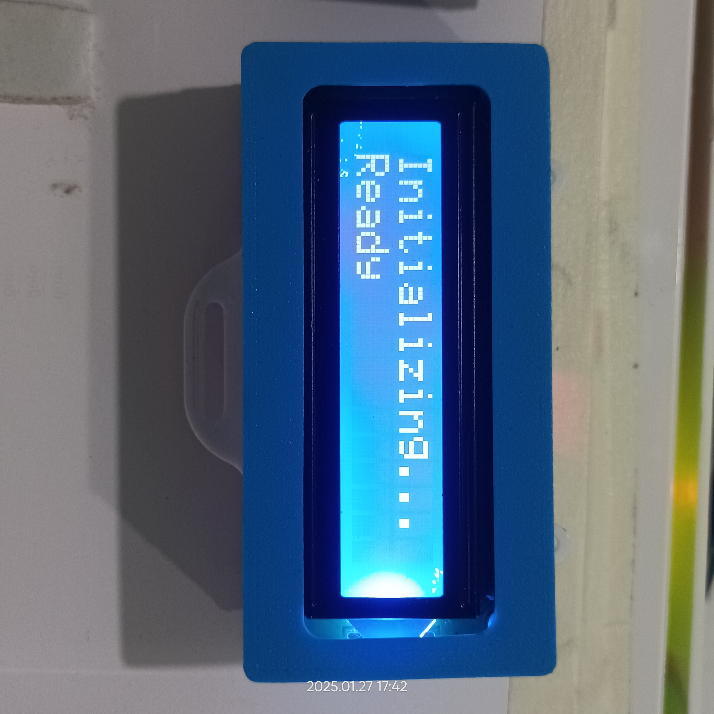
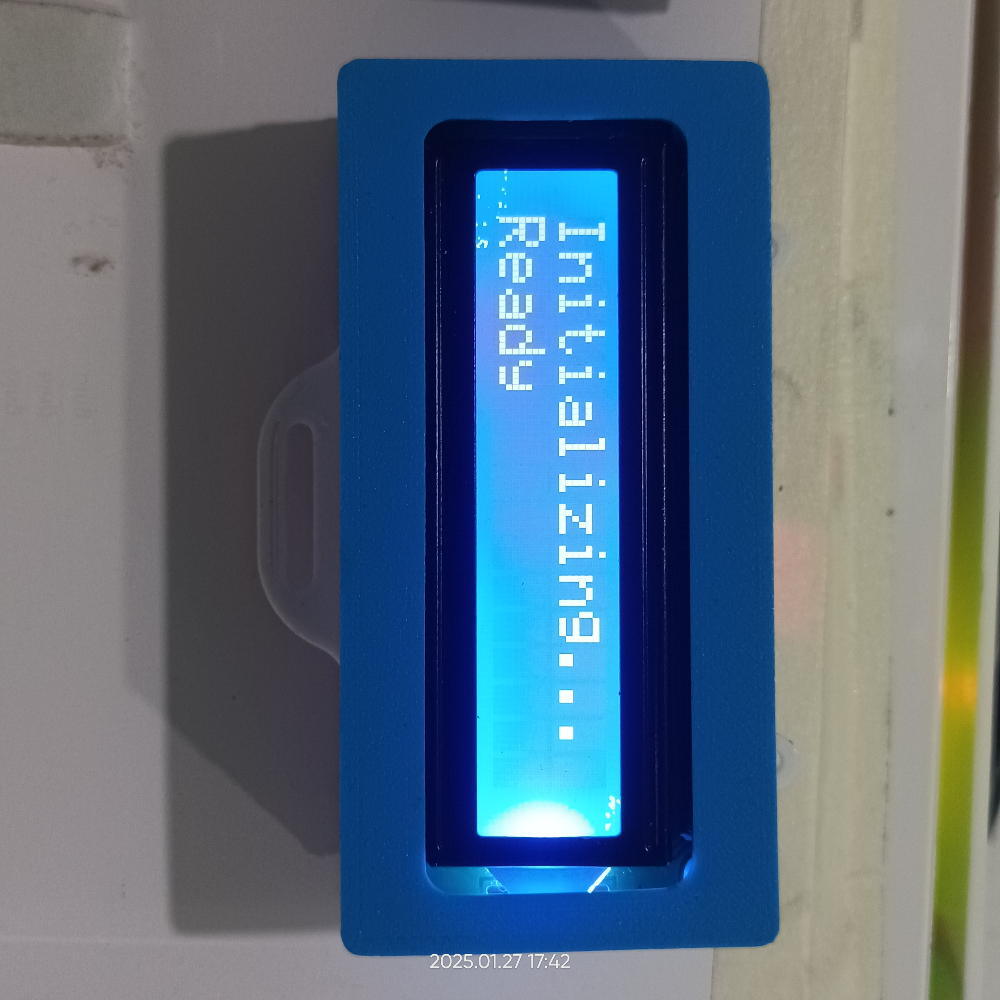

Introduction
WIDEPED is an advanced gesture-based home automation system designed to empower individuals with severe physical challenges...
Features
- Gesture-Based Control: Control devices like lights, fans, and buzzers using simple gestures.
- Emergency Support: Trigger an emergency SMS or call using a GSM module.
- Visual Feedback: Real-time visual cues through an OLED display.
- Audio Assistance: Audio prompts for intuitive navigation.
- Wireless Communication: Seamless ESP-NOW connectivity.
- Portable and Affordable: Compact, easy-to-install, and budget-friendly.
How Does It Work?
- Sensors: Detect gestures using the MPU6050 accelerometer.
- Processing: ESP32 processes signals and decides actions.
- Communication: ESP-NOW transmits signals wirelessly.
- Appliance Control: The receiver module activates appliances.
- Emergency Feature: GSM module handles emergency calls or messages.
- Feedback Mechanisms: OLED for visuals, audio prompts, and LCD for status updates.
Technologies and Tools Used
To bring the WIDEPED project to life, the following technologies, tools, and processes were utilized:
- Embedded C/C++: Programming the ESP32 for gesture recognition and device control.
- Arduino Cloud IDE: Developing and debugging firmware for the microcontroller.
- ESP-NOW Protocol: Wireless communication between devices for seamless operation.
- GSM AT Commands: Sending emergency messages and making calls through the GSM module.
- 3D Printing:
- Design: TinkerCAD for creating custom enclosures.
- Slicing: Ultimaker Cura for preparing files for 3D printing.
- Printing: Creality Ender 3 S1 Pro for printing high-quality parts.
- Website Designing: Creating a responsive and visually appealing website using HTML, CSS, and JavaScript. Hosted on GitHub.io.
- Soldering: Assembling electronic components for a robust circuit.
- Drilling, Wiring, and Wood Cutting: Preparing the physical framework for mounting components and housing devices.
- Prototyping and Testing: Iterative development to ensure reliability and performance.
- OLED and LCD Integration: Displaying real-time visual feedback to users.
- Audio Prompt Integration: Enhancing accessibility through voice-guided instructions.
Gallery


 



Benefits
- Empowers Users: Provides autonomy for physically challenged individuals.
- Enhanced Safety: Quick emergency communication.
- Cost-Effective: Budget-friendly and easy to install.
- Inclusive Design: Accessible for everyone.
Future Enhancements
- Voice command integration for easier control.
- Smartphone app for remote monitoring.
- Real-time IoT dashboard for caregivers.